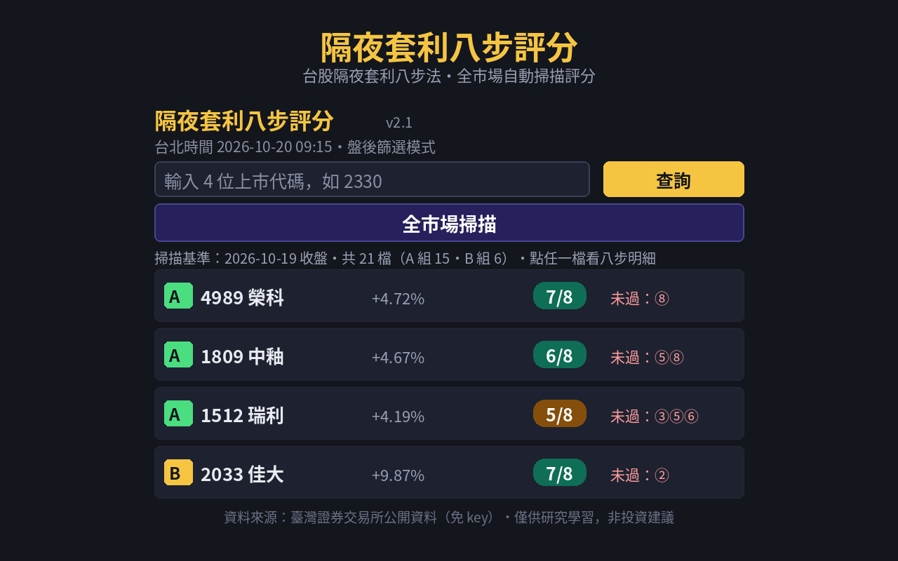
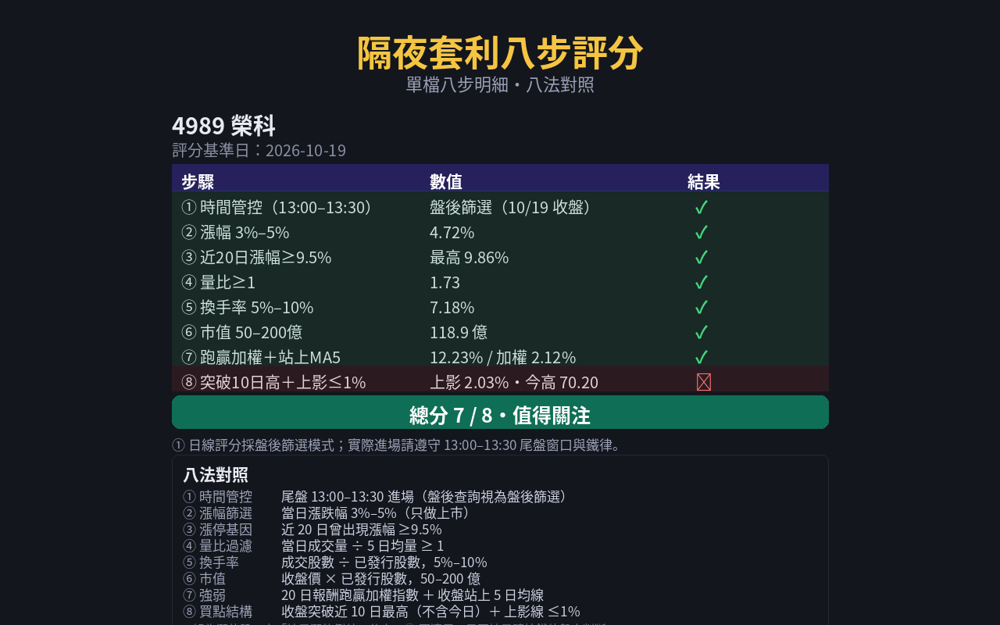
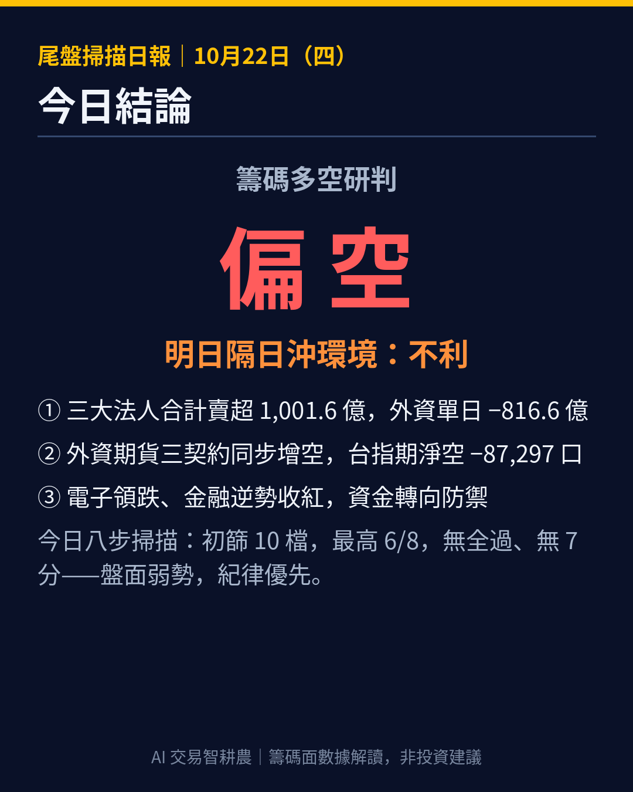

單檔查詢
輸入 4 位上市代碼，立即顯示八步逐項 ✓/✗、數值與總分。
AI 交易 ・ TradingView ・ 自動化回測
用程式與數據做交易決策 —— 隔日沖八步篩選、免費自動評分工具
不喊明牌、不靠感覺。把選股條件全部量化成規則，用證交所公開資料逐項評分，哪一檔卡在哪一步，點開明細就知道。

免費工具
台股「隔夜套利八步篩選法」自動評分工具。單檔查詢＋全市場自動掃描，八項指標自動打分，資料來自臺灣證券交易所公開行情。僅供研究學習，非投資建議。
「隔夜套利八步評分」是台股「隔夜套利八步篩選法」的自動評分工具，把八個篩選條件寫成程式，在瀏覽器裡一鍵跑分。
輸入 4 位上市代碼，立即顯示八步逐項 ✓/✗、數值與總分。
按一個鍵掃描全部上市普通股，先以收盤快照初篩（A 組漲幅 3–5%／B 組漲停例外分支），再逐檔評完整八步，依總分排序、點開看明細。
掃描結果下方附八步門檻一覽，隨時對照。
顯示台北時間，並標示是否落在 13:00–13:30 尾盤進場窗口。台北時間 --:--:--
尾盤 13:00–13:30 進場（盤後查詢視為盤後篩選）
當日漲跌幅 3%–5%（只做上市）
近 20 日曾出現漲幅 ≥9.5%
當日成交量 ÷ 5 日均量 ≥ 1
成交股數 ÷ 已發行股數，5%–10%
收盤價 × 已發行股數，50–200 億
20 日報酬跑贏加權指數 ＋ 收盤站上 5 日均線
收盤突破近 10 日最高（不含今日）＋ 上影線 ≤1%
B 組為漲停股，走「縮量漲停例外」分支（② 不適用；是否縮量請依鐵律盤中判斷）。
資料來源：全部使用臺灣證券交易所免 key 公開資料：全市場收盤快照、個股日線、加權指數、上市公司已發行股數。所有計算都在本機瀏覽器內完成。

方法論
這套方法源自「民間股神」楊永興的尾盤選股八法，本站做的是台股 T+2 交割制度下的量化適配：把八個條件全部寫成可驗證的規則，再做成自動評分工具。先講交易閉環，再逐條拆解。
等當日強勢確認得差不多了才出手，避開盤中假突破；進場點貼近收盤價，隔日定價基準明確。
吃的是強勢股的慣性溢價：尾盤買盤未消化完的動能，延續到隔日早盤。曝險只留一個晚上，不做波段凹單。
隔日開盤後半小時內沖高出場，把每一次「尾盤買 → 隔天賣」做成獨立的一天循環，不留倉、不加碼。
除非是縮量漲停或一字板，隔日早盤一律無條件清倉——不凹單、不留倉、不加碼。紀律先於獲利：這套方法賺的是執行的一致性，不是單筆的神準。
只在尾盤窗口進場。盤中追價最容易買在情緒最高點；尾盤才進場，是把「確認強勢」和「控制成本」綁在一起。
漲不到 3%，動能不足；漲超過 5%，隔日可吃的空間先被今天吃掉，還容易是末段噴出。只做上市，是流動性與資料品質的基本盤。
近期漲停過，代表有資金願意用力拉、股性活絡。這種股票出現強勢日的隔天，延續慣性的機率比「萬年不動股」高得多。
量是燃料。當日成交量不低於 5 日均量，才不是無量虛漲；沒有量的強勢，隔天通常沒有接力買盤。
太低，代表籌碼沒動、沒人接力；太高，代表籌碼已經鬆動、買盤耗盡，隔日容易反轉。5–10% 是「有交易熱度、但還沒過熱」的區間。
太小的股容易被少數資金操縱、流動性也差；太大的股，隔日沖的資金規模推不動。這個區間是散戶資金能參與、又不易被玩弄的甜蜜帶。
20 日報酬要贏加權指數、收盤要站在 5 日均線上。順勢才做：逆著大盤與均線接刀，是隔日沖最常見的虧損來源。
突破前高，代表上方沒有套牢賣壓擋路；上影線短，代表尾盤沒有被倒貨。兩個條件一起看，才是乾淨的買點結構。
例外分支：當日漲停股走「縮量漲停例外」——② 漲幅不適用，但「是否縮量」要在盤中自行判斷，工具只負責其餘步數的評分。
回測實驗室
我們請 AI 生成 5 個完整的交易策略，逐一放進回測驗證。帳面數字很好看，但魔鬼藏在交易筆數裡。以下是審查結論，完整過程在影片裡公開。
5 支策略只有 MACD 一支帳面虧損，其餘 4 支都「獲利」——如果只看報表，你會以為自己挖到金礦。
拆開交易明細：S1 全期只有 5 筆交易、S4 只有 4 筆，獲利幾乎全部來自單筆幸運大單。拿掉那一筆，策略原形畢露。
把所有策略放回同一組條件重跑：RSI 策略 −155,800 元；S5 原版 −967,000 元，所謂「優化版」+667,000 元，但勝率只有 11%——靠一筆撐全場，不是能執行的策略。
審查結論：5 支全數未通過健檢。這不是 AI 沒用，而是「會寫程式」和「會賺錢」之間，隔著一套驗證紀律。
先看交易筆數與獲利集中度，再看總報酬。筆數太少、獲利靠單筆的報表，再漂亮都先打問號。
先決定一筆最多賠多少、怎麼出場，再談進場訊號。沒有出場規則的策略，不算策略。
同商品、同期間、同成本假設，策略之間才可比。條件不一致的回測，贏的往往是設定、不是邏輯。
最新教學影片
隔日沖選股怎麼做？尾盤買進、隔天早盤賣出——這一集把「民間股神」楊永興的尾盤選股八法完整搬來台股，八個條件全部量化，散戶用收盤資料就能跑，最後公開我自己做的免費自動評分工具，收盤後一鍵掃完全市場強勢股。

八步法台股 T+2 完整教學：交易閉環、八步逐條、免費評分工具實測。
觀看
AI 生成的 5 個策略逐一回測健檢：為什麼紙面獲利不能信，以及自保的方法。
觀看把教學影片整理成可以慢慢讀、隨時查的文章版——同樣的內容，文字版更適合複習與搜尋。
5 個 AI 寫的經典策略、同一套回測條件逐一健檢：獲利幾乎全靠少數幸運單。附 3 個自保技巧。
讀文章先定義風格、再用三層過濾（未來函數／文檔／簡潔度）驗證指標，加上三屏法與 MTF 多週期實戰邏輯。
讀文章核函數加權取代死板平均：原理、Bandwidth 參數、顏色／標籤／通道進出場，以及必做的 Repaint 避坑與 ADX 改良。
讀文章雙線雲帶定多空、MACD 訊號上主圖、動態停損線、多週期儀表板——順大勢、逆小勢的三步用法。
讀文章先設手續費與滑點，再讀懂最大回撤、獲利因子與勝率迷思，最後避開過度擬合的孤峰參數。
讀文章吞沒、墳墓石、蜻蜓、流星、錘形與組合形態全拆解，加上「判趨勢→找關鍵位→看形態」的進場順序。
讀文章盯盤三大盲點、四步驟把想法變成可回測的 Pine Script 策略、示範回測報告的風險讀法與四個必避的坑。
讀文章每日內容
每個交易日收盤後，用同一套八步邏輯掃描全市場，再加盤後籌碼、異常偵測與多空研判，一次發在 YouTube 社群／IG／FB，本站同步歸檔。
本名單為方法論機械評分，僅供研究學習，非投資建議；進場請自行判斷、自負風險。
每個交易日約 18:00 更新；週末與台股休市日不出刊。

免費領取
三支自製指標開放免費領取，已有 54 位使用者填表領取。填表留下你的 TradingView 用戶名稱，開通後在 TradingView 的「僅限邀請」區就能加入使用。
為台股看盤設計的戰情監控指標，把盤中要盯的關鍵資訊整理在同一張圖上，減少切換視窗的時間。
以零延遲指數移動平均（ZLEMA）為核心的動能指標，反應速度比傳統均線快，適合用來看短線動能轉折。
多核迴歸通道搭配 ADX 趨勢強度，同時看價格的迴歸位置與趨勢強弱，判斷行情是趨勢還是盤整。
在領取表單留下姓名、Email 與 TradingView 用戶名稱（注意：是用戶名稱，不是密碼）。
我們人工把你的 TV 帳號加入邀請名單，完成後你會在 TradingView 收到可用狀態。
打開 TradingView 圖表 →「技術指標」→「僅限邀請」，點選指標加入圖表。
表單連結在頻道影片說明文與社群貼文中；找不到時，先到 FAQ 看領取說明，或到 IG 私訊詢問。
常見問題
完全免費，在 Chrome Web Store 安裝即可。資料全部來自臺灣證券交易所的公開行情，所有計算都在你自己的瀏覽器裡完成，不經過任何伺服器。
只做上市普通股。當日漲停股走「縮量漲停例外」分支：漲幅步不適用，其餘步數照常評分；是否縮量請盤中自行判斷。詳細理由見八步法完整拆解。
不是。評分是方法論的機械篩選結果，幫你把「值得研究」的股票先挑出來，不是買進建議。進場與否請自行判斷、自負風險；本站所有內容均非投資建議。
這套方法的設計就是尾盤決策：13:00–13:30 用當日已確認的強勢進場，隔日早盤出場。用收盤後資料評分，散戶下班後就能完成篩選，不必盯盤追價。
在領取表單留下 TradingView 用戶名稱，開通後打開 TradingView 圖表，從「技術指標 → 僅限邀請」加入。步驟詳見免費指標領取段。
每個交易日約 18:00 發佈在 IG、FB 與 YouTube 社群，本站日報段同步歸檔最新一期與歷期摘要；週末與台股休市日不出刊。
關於
AI 交易、TradingView、自動化回測。用 AI 寫策略、用數據驗證策略，把每一套方法都做成能每天執行的系統與工具。
這個頻道（與本站）的紀律只有三條：不喊明牌、賠的一樣報、所有方法都要能被數據驗證。工具全部免費公開，因為先證明方法站得住腳，信任自然會來。
本站內容為教學分享，不構成任何投資建議。投資有風險，請自行評估。本工具輸出為方法論的機械評分，僅供研究學習；實際交易請自行判斷、自負風險。